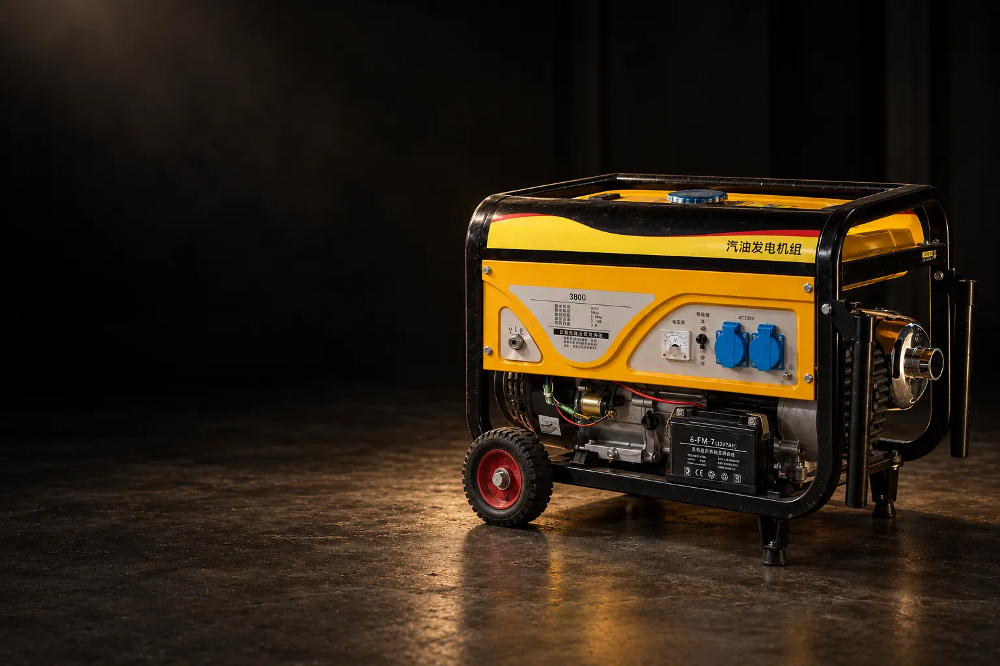
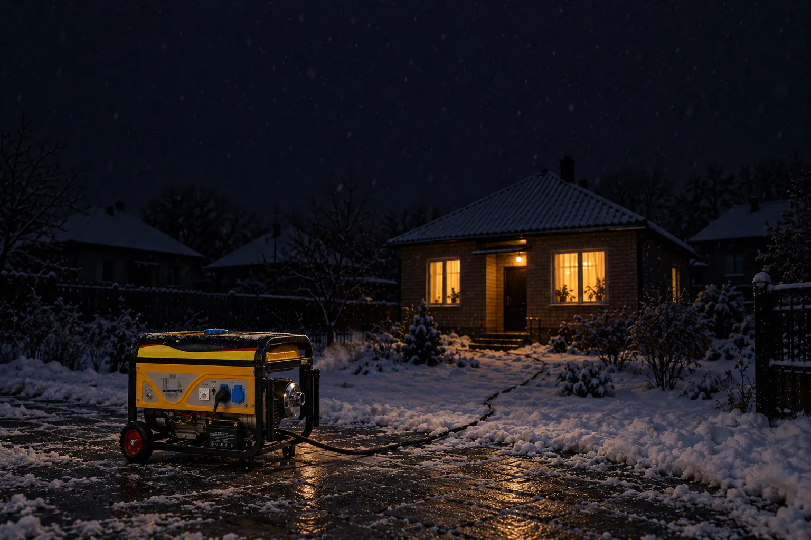
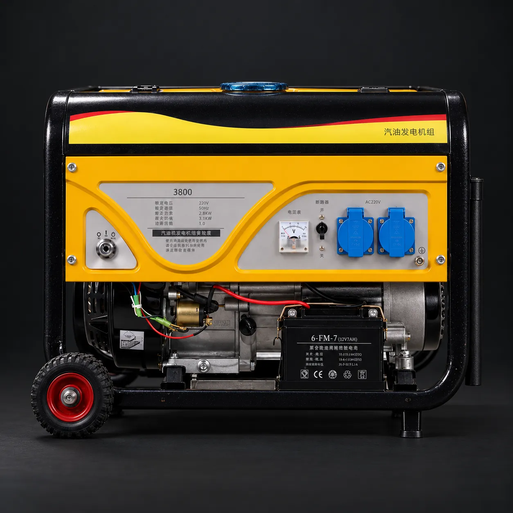
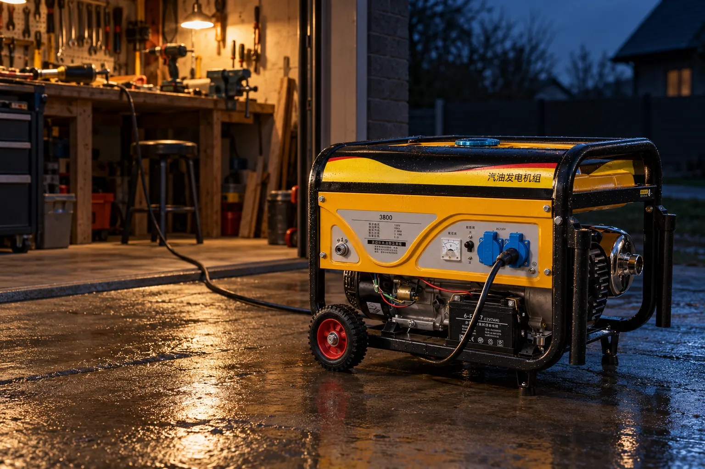
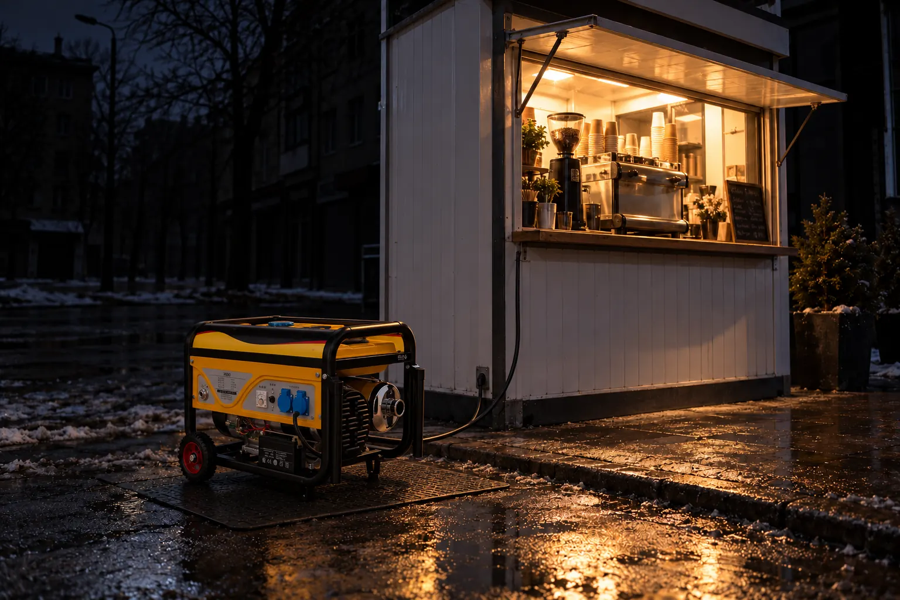
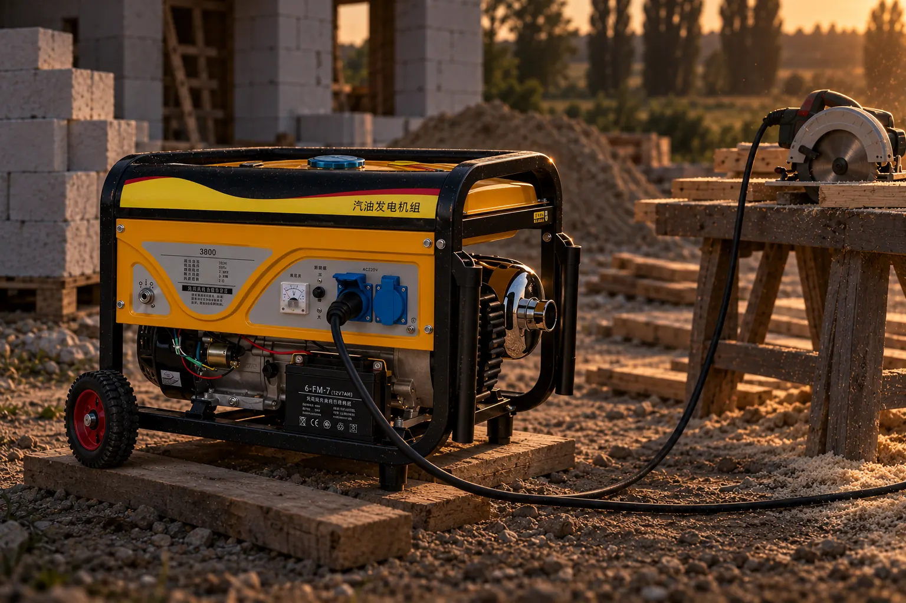
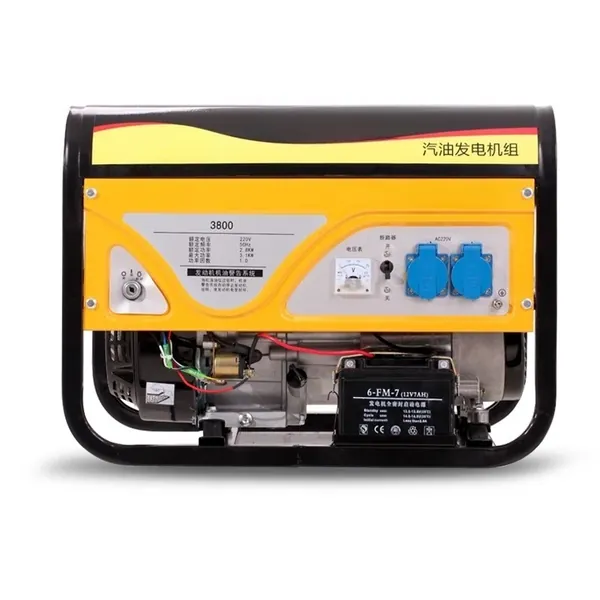
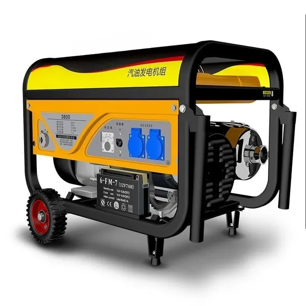
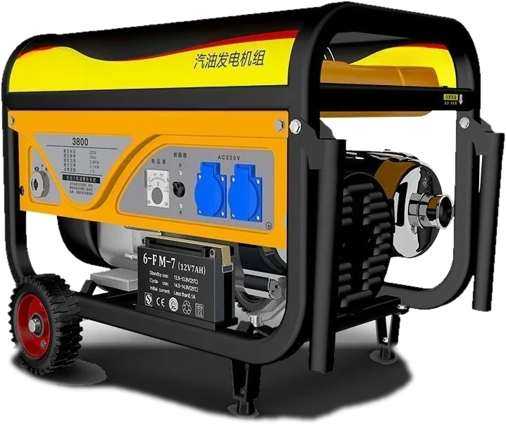

3кВт
Ручний стартшнуром
Базовий набір на час відключень: холодильник, газовий котел, світло, роутер, телевізор. Чайник і мікрохвильовку вмикайте по черзі.
14 011 грн≈ 4 670 грн за кВт
Обрати 3 кВт

Бензиновий генератор · 220 В · 50 Гц
Класичний генератор на сталевій рамі: дві розетки 220 В, вольтметр, автомат і захист за рівнем мастила. Холодильник, котел, світло й роутер працюють, поки вся вулиця сидить у темряві.
12 год без світла за графіком0 год без світла у вас

01 / Вечір відключень
Світло зникло. Генератор стоїть надворі під навісом, бак заправлений ще з минулого разу.
Поворот ключа у версіях з електростартом або ривок шнура в решті. Хвилину-дві двигун прогрівається без навантаження.
Стрілка вольтметра на 220. Вмикаєте автомат на панелі, і в хаті знову гуде холодильник, котел гріє, роутер роздає інтернет.
02 / Підбір потужності
Клацніть автомати тієї техніки, яку хочете тримати увімкненою одночасно. Стрілка покаже навантаження, а праворуч з'явиться модель, якої вистачить із запасом. Пускові струми холодильника, насоса і компресора враховано.
Розрахунок орієнтовний: потужність техніки взята типова, свою перевірте на шильдику. Тривалу потужність генератора рахуємо як 90% від цифри в назві варіанту, як на шильдику 3-кіловатної моделі: 2,8 кВт номінальних і 3,1 кВт максимальних.
03 / Моделі
Усі варіанти бензинові, однофазні, на 220 В. Відрізняються двигуном, потужністю і запуском: шнуром або ключем. Доставка однакова для всіх: 5 256 грн.
Ручний стартшнуром
Базовий набір на час відключень: холодильник, газовий котел, світло, роутер, телевізор. Чайник і мікрохвильовку вмикайте по черзі.
найдешевший кіловат у лоті
Електростартключ + акумулятор
Те саме, що й 3 кВт, плюс пів кіловата запасу і запуск поворотом ключа. Різниця в ціні: 1 091 грн.
Електростартключ + акумулятор
Приватний будинок зі свердловиною: насос, бойлер або пральна машина разом із холодильником, котлом і світлом.
+1 кВт за 1 558 грн
Електростартключ + акумулятор
Будинок, де не хочуть рахувати вати: насос, бойлер, чайник і все інше одночасно. Або дім плюс гараж з інструментом.
найпотужніший
Ручний стартшнуром
Майстерня, кіоск, будівництво: циркулярка, компресор, кавомашина, морозильник. Запас для техніки з важким пуском.
Ціни AliExpress для доставки в Україну на 5 жовтня 2026 року, без доставки. Ціни на AliExpress змінюються, актуальну ви побачите після переходу за посиланням.
04 / Панель
Жодних меню і кнопок з екраном. Тільки те, що роками працює на будівництвах і дачах.

05 / Де працює

Болгарка, дриль, компресор і лампа над верстатом. Генератор стоїть надворі, кабель іде через поріг.
Підійде: 6,5-8 кВт
Коли вся вулиця темна, ваше вікно - єдине світле. Черга буде, але вже до вас.
Підійде: 3-6,5 кВт
Циркулярка, дриль і бетонозмішувач там, куди мережу ще не підвели.
Підійде: 5,5-8 кВт06 / Чесно
Краще прочитати це тут, ніж здивуватися на подвір'ї.
Напруга з класичного генератора на рамі менш рівна, ніж з інверторного. Котел, комп'ютер і телевізор підключайте через стабілізатор або ДБЖ з подвійним перетворенням. Холодильнику, насосу, чайнику й інструменту це не потрібно.
Відкрита рама, двигун без шумоізоляції. Продавець пише «low noise», і це правда лише в порівнянні з генератором без глушника. Ставте його за 5-7 метрів від вікон, своїх і сусідських.
У вихлопі чадний газ без кольору й запаху. Не в гаражі, не в підвалі, не на балконі, навіть з відчиненими дверима. Під навісом на вулиці - так.
Як і більшість генераторів у доставці, він їде без мастила і бензину. Перед першим запуском залийте мастило для 4-тактних двигунів до мітки на щупі. Без нього датчик просто не дасть двигуну працювати.
У назві оголошення згадано 380 В і 10 кВт, але серед варіантів для вибору є лише моделі 3-8 кВт, а на фото - розетки 220 В. Потрібна трифазна - напишіть продавцю до оплати.
Усі фото продавця показують раму «3800». Моделі 5,5-8 кВт мають більший двигун, тому рама і бак у них трохи інші. Варіанти з ручним стартом можуть бути без ключа і акумулятора.
Наземна лінія для великих вантажів: 54-69 днів. Замовлене 5 жовтня очікується між 28 листопада і 13 грудня. Тому замовляти краще зараз, а не в день першого відключення.
07 / Характеристики
Продавець не публікує повної таблиці, тому ділимо дані на дві частини: те, що видно на корпусі й шильдику, і те, що типово для генераторів на таких двигунах.
| 3-3,5 кВт | 5,5-6,5 кВт | 8 кВт | |
|---|---|---|---|
| Двигун | 168F / 170F | 188F / 190F | 192F |
| Об'єм | 196-212 см³ | 389-420 см³ | ≈ 460 см³ |
| Бак | ≈ 15 л | ≈ 25 л | ≈ 25 л |
| Витрата при 75% | ≈ 1,2 л/год | 2-2,4 л/год | ≈ 3 л/год |
| На одному баку | 10-12 год | ≈ 10 год | ≈ 8 год |
| Мастило | ≈ 0,6 л | ≈ 1,1 л | ≈ 1,1 л |
| Вага | 40-45 кг | 75-85 кг | ≈ 90 кг |
Двигуни 168F і 188F - поширені копії Honda GX, тому свічки, фільтри, карбюратори і стартери до них продаються в магазинах мотозапчастин по всій Україні. Точні цифри свого варіанту уточнюйте у продавця в чаті AliExpress.
Оригінальні фото продавця, без обробки


08 / Ціна і доставка
Без «від» і зірочок: ціна генератора, доставка і дата, коли він приблизно буде у вас.
Їде 54-69 днівОчікується 28.11-13.12
Перейти до замовленняЦіни і терміни перевірено 5 жовтня 2026 року. Магазин Shop1105609580 Store на AliExpress.
09 / Питання
Так, котел із циркуляційним насосом споживає 100-200 Вт, це дрібниця навіть для 3 кВт. Але генератор класичний, не інверторний, тому котел підключайте через стабілізатор або ДБЖ з подвійним перетворенням: електроніка котла чутлива до коливань напруги.
Орієнтовно: модель 3 кВт з холодильником, котлом і світлом витрачає 0,7-1 л на годину, моделі 5,5-8 кВт під навантаженням - 1,5-3 л. На 10-12 годин без світла для меншої моделі закладайте 8-12 л. Що менше одночасно ввімкнено, то менша витрата.
Бензин А-92 або А-95. Мастило для 4-тактних двигунів, зазвичай SAE 10W-30 або 10W-40, рівень перевіряйте щупом. Першу заміну мастила роблять приблизно після 20 годин роботи, далі кожні 50-100 годин.
Тільки через перекидний рубильник «мережа / генератор» або АВР, і хай це зробить електрик. Без перемикача струм піде в лінію, на якій можуть працювати ремонтники, а коли світло дадуть, мережа вдарить по генератору.
Ні, просто менш зручний. Шнур не залежить від акумулятора, тому взимку він навіть надійніший. Ключ зручніший, якщо заводити генератор буде людина, якій важко смикати шнур. Для 8 кВт з ручним стартом знадобиться впевнений ривок.
Генератори цього класу стоять на двигунах типу 168F, 188F, 190F, 192F. Це найпоширеніші малі двигуни в Україні: свічки, фільтри, карбюратори, стартери і щітки генератора є в будь-якому магазині мотозапчастин, а ремонтують їх у кожному сервісі мотоблоків.
У назві оголошення згадано 380 В, але серед варіантів для вибору є лише однофазні моделі 3-8 кВт з розетками 220 В. Для трифазної версії напишіть продавцю в чат до оплати.
Наземною лінією для великих вантажів 54-69 днів, 5 256 грн за будь-яку модель. Замовлене на початку жовтня очікується між 28 листопада і 13 грудня. Якщо товар не прийде або не відповідатиме опису, можна відкрити спір і повернути гроші через захист покупця AliExpress.
Останнє
Замовлене в грудні приїде вже в лютому. Графіки відключень не чекають, поки приїде посилка, тому оберіть потужність і замовте, поки доставка встигає до зими.
